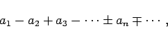
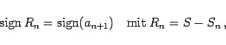
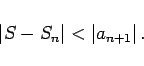
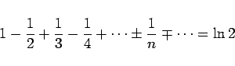
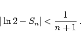

Inhalt Index DeskTop Bronstein

 Unendliche Reihen Reihen mit konstanten Gliedern Absolute und bedingte Konvergenz
Unendliche Reihen Reihen mit konstanten Gliedern Absolute und bedingte Konvergenz


|  | (7.36a) |
in der die an positive Zahlen sind, ist die Erfüllung der zwei Bedingungen
| Beispiel |
|
Die Reihe (7.34) ist nach diesem Kriterium konvergent. |
|  | (7.37a) |
|  | (7.37b) |
| Beispiel |
|
Bei der Reihe |
|  | (7.38a) |
gilt für das Restglied
|  | (7.38b) |